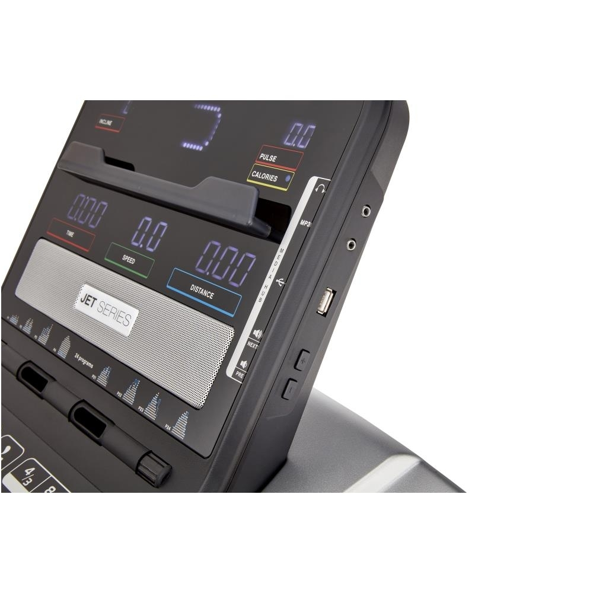

Welcome to Bėgimo takelis
Bėgimo takelis – stipriam ir sveikam kūnui | Skorpionas
2020.10.30 05:11+370 699 21211
Treniruokliai
TreniruokliaiDviračiai treniruokliai
Elipsiniai treniruokliai
Bėgimo takeliai
Irklavimo treniruokliai
Jėgos staklės
Universalūs suoliukai
Ministeperiai
Priedai treniruokliams
Profesionalūs treniruokliai
Treniruokliai iš ekspozicijos
Bėgimo takelis TOORX WALKINGPAD G 609 € Dviratis treniruoklis EVERFIT BRX-35 147 € Irklavimo treniruoklis NordicTrack RX 800 519 € Sporto
prekės
Sporto prekės Fitnesas, aerobika, joga
Fitnesas, aerobika, joga KILIMĖLIAI KAMUOLIAI GRIFAI, SVORIAI, HANTELIAI SMULKUS INVENTORIUS JUOSTOS MANKŠTAI FUNKCINIAI TRENIRUOKLIAI BALANSO TRENIRUOČIŲ INVENTORIUS MASAŽINIAI VOLAI GIMNASTIKOS LANKAI PAKYLOS TRENIRUOČIŲ PIRŠTINĖS KITAS INVENTORIUS STOVAI INVENTORIUITreniruočių inventorius
Treniruočių inventorius FIZINIAM PASIRENGIMUI GERTUVĖS KŪGIAI, ŽYMEKLIAI, VĖLIAVĖLĖS SEKUNDMAČIAI, ATSTUMO MATUOKLIAI STRATEGINĖS IR VARŽYBŲ LENTOS TRENIRUOČIŲ LIEMENĖS VIKRUMO KOPETĖLĖS, BARJERAI, LAZDOS KITAS INVENTORIUSKrepšinio inventorius
Krepšinio inventorius KREPŠINIO KAMUOLIAI AKSESUARAI TRENIRUOTĖMSTinklinio inventorius
Tinklinio inventorius TINKLINIO KAMUOLIAI AKSESUARAI APSAUGOS TRENIRUOTĖMS TINKLAIFutbolo inventorius
Futbolo inventorius FUTBOLO KAMUOLIAI AKSESUARAI TRENIRUOTĖMS APSAUGOS TINKLAIRankinio inventorius
Rankinio inventorius RANKINIO KAMUOLIAI TINKLAI AKSESUARAI TRENIRUOTĖMSRakečių sportas
Rakečių sportas LAUKO TENISAS BADMINTONAS PADELIS PAPLŪDIMIO TENISAS SKVOŠAS STALO TENISASVandens sportas ir plaukimas
Vandens sportas ir plaukimas PLAUKIMO AKINIAI PLAUKIMO KEPURAITĖS PLAUKIMO AKSESUARAI PLAUKIMO KOSTIUMAI ŠLEPETĖS VANDENS BATAI PLAUKIMO INVENTORIUS NARDYMO INVENTORIUS VANDENS AEROBIKA MAUDYMOSI KOSTIUMAI DUŠUI, SAUNAI, PAPLŪDIMIUIĮtvarai ir apsaugos
Dvikovinis sportas
Dvikovinis sportas BOKSAS, KIKBOKSAS DZIUDO KARATE APSAUGOS KITAS INVENTORIUSSmiginis
Smiginis TAIKINIAI STRĖLYTĖS ANTGALIAI KOTELIAI SPARNELIAI SMIGINIO AKSESUARAIAksesuarai
Aksesuarai POMPOS, ADATOS RANKINĖS, KREPŠIAI SUVENYRAI ŠVILPUKAI BEISBOLAS RIEDULYS Pilates volas SVELTUS 90 cm 24,99 € -15% Funkcinis raumenų treniruoklis SVELTUS SUSPENDER 44,19 € 51,99 €Dviračiai
DviračiaiMiesto dviračiai
Elektriniai dviračiai
Dviračių aksesuarai
Elektriniai paspirtukai
Balansiniai dviratukai
Triratukai
Paspirtukai
Sulankstomas dviratis PROPHETE URBANICER 20.BSU.10 20 399,95 € Elektrinis dviratis PROPHETE URBANICER 20.ETU.10 20 2199,95 € -30% Balansinis dviratukas KETTLER RUN AIR 12.5 BOY 90,93 € 129,90 € Balansinis dviratukas KETTLER RUN AIR 12.5 GIRL 129,90 € Laisvalaikio
prekės
Laisvalaikio prekės Irklentės (SUP)
Riedučiai
Riedlentės
Kepsninės
Vaikščiojimo lazdos
Miegmaišiai
Kitos laisvalaikio prekės
Riedlentė URBAN FREEDOM PRO USA FLAG 30,99 € Riedlentė DROP PACIFIC longboard 59,99 € -20% Riedučiai retro Nijdam 52RF, 37 dydis 54,87 € 68,59 € -20% Reguliuojamo dydžio riedučiai NIJDAM 52SJ, 30-33 dydis 43,67 € 54,59 € Apranga
ir
avalynė
Apranga ir avalynė Sportinė apranga
Plaukimo kostiumai
Maudymukai
Sportinė avalynė
Vandens batai
Šlepetės
Išpardavimas
Apie įmonę Kontaktai Pristatymo sąlygos Mokėjimo būdai Katalogas Įgyvendinti projektai +370 699 21211 Prisijungti Krepšelis Skorpionas.lt / Katalogas / TRENIRUOKLIAI / BĖGIMO TAKELIAIBĖGIMO TAKELIAI
TRENIRUOKLIAITRENIRUOKLIAI
Kategorija
DVIRAČIAI TRENIRUOKLIAI
ELIPSINIAI TRENIRUOKLIAI
BĖGIMO TAKELIAI
IRKLAVIMO TRENIRUOKLIAI
JĖGOS STAKLĖS
UNIVERSALŪS SUOLIUKAI
MINISTEPERIAI
PROFESIONALŪS TRENIRUOKLIAI
PRIEDAI KARDIO TRENIRUOKLIAMS
TRENIRUOKLIAI IŠ EKSPOZICIJOS
Kaina
Prekių ženklai
Toorx 5 Nordic Track 9 Pro Form 3Maksimalus naudotojo svoris
100 kg 4 110 kg 2 115 kg 2 125 kg 12 135 kg 2 140 kg 2 136 kg 8Greitis
0-16 km/h 4 0-18 km/h 2 0-20 km/h 2 0-22 km/h 16 0,8/22 km/h 2 0,5-6 km/h 4 0,8-16 km/h 2Nuokalnė
Nėra 12 0-3 % 6 0-6 % 2Variklio galia
2 CHP 4 2,75 CHP 2 3 CHP 6 4 CHP 2 1,75 CHP 2 3,6 CHP 2 4,25 CHP 4 3,75 CHP 2 2 HP 4BĖGIMO TAKELIAI
Filtrai Rikiuoti pagal... Pavadinimą Didžiausią nuolaidą Mažiausią kainą Didžiausią kainą Naujiena Bėgimo takelis TOORX WALKINGPAD G 609 € Bėgimo takelis TOORX WALKINGPAD P 559 € Naujiena Bėgimo takelis TOORX TRX-MARATHON 1202 € Bėgimo takelis TOORX TRX-WALKER EVO 591 € Bėgimo takelis TOORX RACER 630 € TOP Bėgimo takelis PROFORM Performance 375i 1013 € TOP Bėgimo takelis ProForm 205 CST 857 € -10% Bėgimo takelis NORDICTRACK S 25 1052,10 € 1169 € TOP Bėgimo takelis NORDICTRACK S 30 1259 € Bėgimo takelis PROFORM PERFORMANCE 400i + IFIT 1 METŲ NARYSTĖ 1481 € TOP -10% Bėgimo takelis NORDICTRACK S 40 + iFit 1 metų šeimyninė narystė 1379,70 € 1533 € Bėgimo takelis NORDICTRACK T 7.5 S + iFit 1 metų šeimyninė narystė 1339 € TOP Bėgimo takelis NORDICTRACK T 9.5 S + iFit 1 metų narystė 2334 € TOP -30% Bėgimo takelis NORDICTRACK COMMERCIAL 1750 + IFIT 1 METŲ NARYSTĖ 1813,70 € 2591 € Bėgimo takelis NORDICTRACK COMMERCIAL 2450+iFit 1 metų narystė 2119 € TOP -32% Bėgimo takelis NORDICTRACK COMMERCIAL 2950+iFit 1 metų narystė 2386,12 € 3509 € Bėgimo takelis NORDICTRACK INCLINE X32i+iFit 1 metų narystė 2939 € Rodyti po: 48 72 96 120Bėgimo takelis – vienas iš dažniausiai naudojamų treniruoklių. Jų pasirinkimas labai didelis: nuo paprastų iki ypač modernių. Dėl šios priežasties išsirinkti individualiai labiausiai tinkantį gali būti pakankamai sudėtinga. Norite palengvinti šią užduotį? Tuomet skaitykite ir sužinokite daugiau apie tokių priemonių ypatumus.
FUNKCIONALUMAS IR KOMFORTAS
Šie kardiotreniruokliai yra ypač patogūs ir funkcionalūs. Skirtingų pasipriešinimo lygių sistema leidžia pasirinkti sau labiausiai tinkantį krūvį ir jį reguliuoti. Treniruotės parametrus (įkalnę, greitį ir kt.) galima pakeisti vos keliais paspaudimais. Kai kurie takeliai turi jutiminius ekranus ir programinę įrangą. Tai suteikia galimybę stebėti treniruotes arba mėgautis kitais vaizdais, pavyzdžiui, gamtos.
Bėgimo takeliai turi tyliai ir sklandžiai veikiantį variklį, kuris leidžia išvystyti didelį greitį. Amortizacinė sistema suteikia papildomo komforto ir padeda išvengti didelės sąnarių ir stuburo apkrovos. Plati ir ilga bėgimo juosta padeda jausti saugiau net ir aukštesniems žmonėms, kurių žingsnis platesnis.
PAPILDOMA PATOGUMO SUTEIKIANTI ĮRANGA
Priklausomai nuo modelio, bėgimo takelis gali turėti ir papildomos, patogumo suteikiančios įrangos. Vienas iš pavyzdžių – ventiliatoriai. Jie padeda atsigaivinti ir neperkaisti, todėl ne taip greitai pavargstama. Kai kurie kardio treniruokliai turi ir garso kolonėles, leidžiančias klausytis mėgstamos muzikos ar kt. Tam, kad vandens buteliukas ir rankšluostis visuomet būtų po ranka, įrengtos specialios dėtuvės.
NAUDA VISAM KŪNUI
Apgalvotai parinktas fizinis krūvis prisideda prie geros savijautos palaikymo. Įrodyta, kad bent 10 min. sporto, kuriam puikiai tinka bėgimo takeliai, gali pagerinti nuotaiką. Be to, aktyvi veikla padeda stiprinti ne tik raumenis, bet ir imuninę sistemą. Todėl reguliariai sportuojantys rečiau serga.
Bėgimo takelis – efektyvus pasirinkimas tiems, kurie nori atsikratyti nereikalingų riebalų. Žinoma, maksimaliems rezultatams labai svarbi ir subalansuota mityba. Bėgimo metu stiprinamos įvairios raumenų grupės, taip pat suaktyvėja medžiagų apykaita.
PATOGUS RODIKLIŲ STEBĖJIMAS
Šiuolaikiški kardiotreniruokliai leidžia patogiai stebėti įvairius rodiklius:
ėjimo/bėgimo greitį, laiką, įveiktą atstumą, sudegintas kalorijas, pulsą.
Todėl įvertinti treniruotės eigą ir savo fizinę būklę tampa dar lengviau. Pajutus, kad krūvis nėra tinkamas, galima sumažinti arba padidinti pasipriešinimą.
Domina bėgimo takeliai ar kiti treniruokliai? Elektroninės parduotuvės Skorpionas.lt kataloguose galite rasti didelį jų pasirinkimą. Jei turite klausimų, drąsiai kreipkitės. Mūsų specialistai pasiruošę jums padėti. Tikime, kad sportas ir aktyvi gyvensena – kelias į geresnę savijautą. Nepraleiskite progos tuo įsitikinti ir patys.
DUK
1. Kokį maksimalų greitį galima pasiekti ant bėgimo takelio?
Tai priklauso nuo konkretaus treniruoklio modelio. Vidutiniškai maksimalus greitis siekia apie 20 km/val.
2. Kokie bėgimo takeliai labiausiai tinka aukštiems žmonėms?
Aukštų žmonių žingsnis būna didesnis, todėl jiems reikia takelio su ilgesniu bėgimo paviršiumi. Priešingu atveju gali būti nepatogu sportuoti.
3. Ar lengvesnis treniruoklis namuose yra geriau?
Nebūtinai. Tam, kad sportuodami jaustumėtės stabiliai, bėgimo takelis turėtų būti pakankamai sunkus. Jei norite, kad treniruoklį būtų patogu transportuoti, atkreipkite dėmesį į tai, ar jis turi ratukus.
4. Į kokias rūšis skirstomi bėgimo takeliai?
Dažniausiai jie skirstomi į 3 rūšis: buitinius, pusiau profesionalius ir profesionalius. Pirmieji kardio treniruokliai yra pigiausi ir skirti retam naudojimui, o paskutinieji – brangiausi. Jie pritaikyti itin dažnam naudojimui, turi daugiau funkcijų ir yra galingesni.
5. Kaip įvertinti maksimalų treniruoklio naudotojo svorį?
Rekomenduojama rinktis tokį bėgimo takelį, kurio naudotojo svoris būtų bent 20 kg didesnis už jūsų. Tuomet sportuodami jausitės patogiai. Pavyzdžiui, jei sveriate 80 kg, maksimalus treniruoklio naudotojo svoris turėtų būti bent 100 kg.
Privatumo politika Grąžinimo sąlygos Pirkėjo teisės Servisas Partneriai Be UAB „Skorpiono takas“ sutikimo draudžiama kopijuoti ir platinti svetainėje esančią informaciją Sprendimas: ELECTRONIC LAB